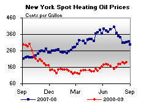

Released on August 26, 2009
(Next Release on September 2, 2009)
Coordinating the Federal Response to Hurricane-Related Energy Emergencies
Hurricane season officially started on June 1, and the Federal Government, led by the Department of Energy’s (DOE) Office of Electricity Delivery and Energy Reliability, is prepared to respond alongside the private sector should a hurricane affect the energy infrastructure of the United States. In early August, the National Oceanic and Atmospheric Administration revised its outlook for the 2009 Atlantic hurricane season, reducing the number of projected named storms and raising the probability of a “below normal” storm season. By comparison to 2008 (Hurricanes Gustav and Ike) or 2005 (Hurricanes Katrina and Rita), the forecast for this season appears relatively benign. Nevertheless, despite NOAA’s current assessment that the 2009 storm season has a 90 percent probability of falling into either the near-normal or below-normal range, it could yet hold some surprises and cause considerable damage. Key government agencies remain diligent and ready to respond.
DOE coordinates its emergency response activities both within the DOE itself and with a variety of other Federal agencies that have responsibility for different components of the energy sector. One of DOE’s most visible responses is the issuance of Emergency Situation Reports, which provide information on refinery, electricity, pipeline, and offshore production outages, restoration status, and market impacts. The Energy Information Administration also provides status reports on energy supply and markets following major hurricanes. In addition, after a Federal Emergency Management Agency (FEMA) disaster declaration, DOE staff often deploy to disaster sites where they work closely with the Department of Homeland Security (DHS), FEMA, and the Department of Defense (DOD) to coordinate restoration and recovery of damaged energy infrastructure. DOE personnel also coordinate with other Federal, State, and local government agencies, as well as asset owners and operators.
Examples of DOE emergency coordination with other Federal agencies include its ongoing work with the Minerals Management Service to track platform evacuations and measure shut-in production in the Gulf of Mexico. DOE monitors port closures announced by the U.S. Coast Guard (USCG), as other commercial ports will follow USCG guidelines. If floodwaters impact the Gulf Intracoastal Waterway, the Mississippi, or other major rivers, locks may be closed by the DOD, effectively stopping barge traffic from moving refined products and ethanol to markets. DOE coordinates with the Department of Transportation (DOT) and the Federal Energy Regulatory Commission when pipelines moving crude oil, petroleum products, liquefied petroleum gases, or natural gas suffer damage or unexpected shutdowns. DOE also coordinates with DHS when refineries or pipelines shut down.
Depending on the nature of the event, DOE is often asked to perform analysis to support emergency waivers of various statutes or standards. For example, DOE may evaluate a DHS waiver of the Merchant Marine Act of 1920 (the “Jones Act”) for certain shipments of crude oil and petroleum products in the Gulf of Mexico. Additionally, DOE works closely with the Environmental Protection Agency to facilitate decision-making regarding temporary waivers of certain fuel requirements following product shortages. DOE may also work with the DOT to coordinate driver-hour waivers for motor carriers hauling emergency relief supplies, including emergency fuel supplies, to various regions of the country.
In the event of a serious electricity issue, DOE has the authority to allow electric interconnections to critical infrastructure and to assist in re-establishing priorities for electric restoration of key assets. Another major response tool for energy emergencies is the Strategic Petroleum Reserve, which stands ready to provide crude oil exchanges or to release crude oil stocks to diminish the harmful effects of petroleum supply disruptions.
Energy disruptions often have secondary effects. For example, damaged natural gas gathering pipelines in the Gulf of Mexico may be unable to pull the natural gas associated with oil wells, effectively stopping crude oil production in certain offshore areas. Electricity outages at ports, refineries, along pipelines, or at terminals can stop the flow of petroleum. Any of these secondary effects may also require DOE coordination to ensure the swiftest restoration of energy supplies.
While no Federal agency can prevent hurricanes or other natural disasters, DOE stands ready to respond to energy emergencies by coordinating with industry and other Federal, State, and local government agencies to secure a reliable flow of energy.
Gasoline Price Slips Slightly but Diesel Prices Continue to Advance
The U.S. average price for regular gasoline slipped a penny for a second straight week, settling at $2.63 per gallon. The national average was $1.06 below the year-ago price. The East Coast price fell a penny to $2.61 per gallon while the Midwest average was essentially unchanged at $2.55 per gallon. The average price on the Gulf Coast remained the lowest of any region, dropping nearly three cents to $2.49 per gallon. The Rocky Mountain region was the only area of the country to register a price increase. Although the price inched up a half cent to $2.62 per gallon, it remained $1.22 below last year. The average on the West Coast dipped a penny to $2.95 per gallon, while the price in California slipped two cents to $3.03 per gallon.
The national average price for diesel fuel rose for the fifth consecutive week with an increase of nearly two cents taking the price to $2.67 per gallon. Despite a cumulative increase over the past five weeks of more than 17 cents, the average price was $1.48 below last year. Diesel prices increased in all regions of the country. The East Coast average inched up a half penny to $2.69 per gallon, $1.51 below a year ago. In the Midwest, the price rose over a cent to $2.64 per gallon. Despite an increase of nearly two cents, the average on the Gulf Coast remained the lowest of any region at $2.62 per gallon. The largest price increases took place in the Rocky Mountains and on the West Coast where the averages increased four cents to $2.67 and $2.79 per gallon, respectively. In California, the average moved up a penny to $2.88 per gallon.
Propane Adds to Brimming Inventories
Propane stocks continued to climb last week, adding 0.9 million barrels of inventory to reach 70.7 million barrels. Total inventories are experiencing levels not seen since November 2006. The Gulf Coast region realized the largest gain with 0.9 million barrels of new stocks. The Rocky Mountain/West Coast region added 0.1 million barrels while the Midwest region built only slightly. The East Coast experienced the only loss with 0.2 million barrels of inventory draw. Propylene non-fuel use inventories experienced another loss last week, sending the share of total propane/propylene inventories to 2.5 percent.
Text from the previous editions of This Week In Petroleum is now accessible through a link at the top right-hand corner of this page.
| Retail Prices (Cents Per Gallon) | |||||||
| Retail Data | Changes From | Retail Data | Changes From | ||||
| 08/24/09 | Week | Year | 08/24/09 | Week | Year | ||
| Gasoline | 262.8 | Diesel Fuel | 266.8 | ||||
| Spot Prices (Cents Per Gallon*) | |||||||||||||||||||||||||||||||||||
|  | |||||||||||||||||||||||||||||||||||
|
|||||||||||||||||||||||||||||||||||
| *Note: Crude Oil WTI Price in Dollars per Barrel. | |||||||||||||||||||||||||||||||||||
| Stocks (Million Barrels) | |||||||
| Stocks Data | Changes From | Stocks Data | Changes From | ||||
| 08/21/09 | Week | Year | 08/21/09 | Week | Year | ||
| Crude Oil | 343.8 | Distillate | 162.4 | ||||
| Gasoline | 208.1 | Propane | 70.658 | ||||